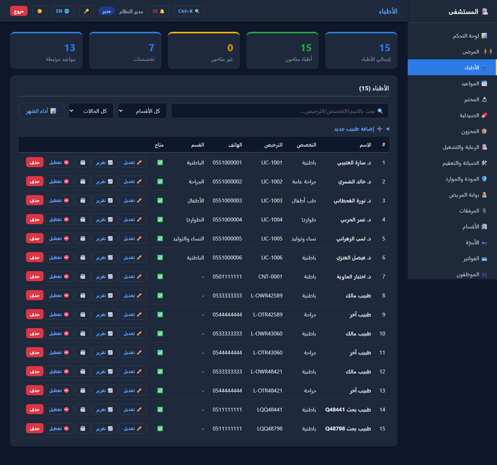
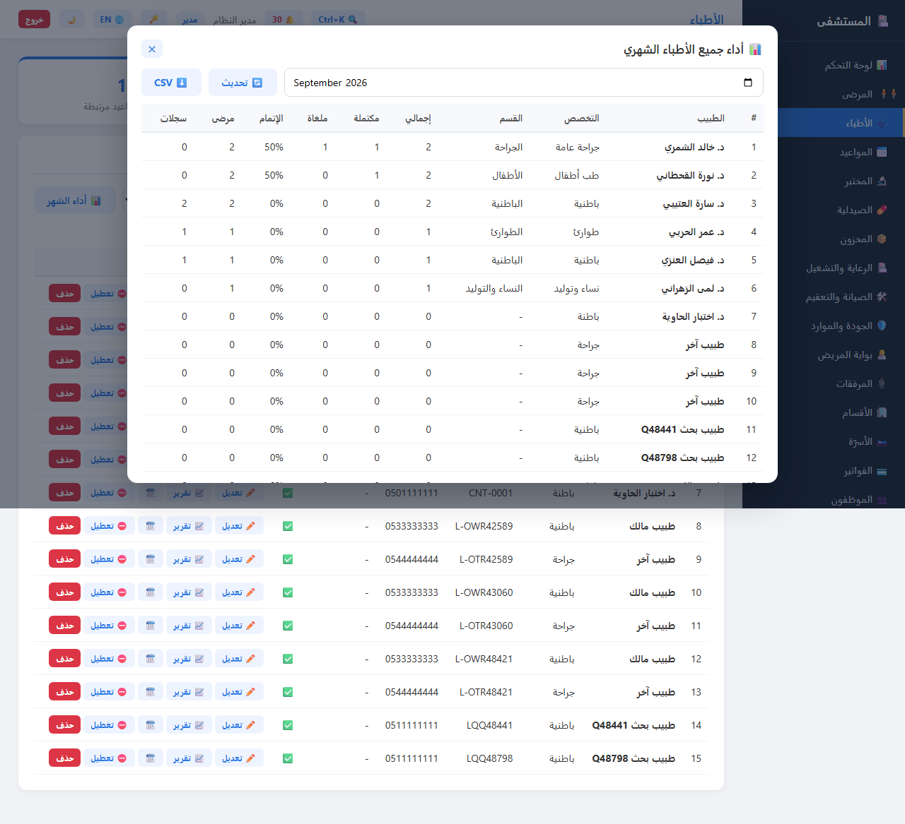
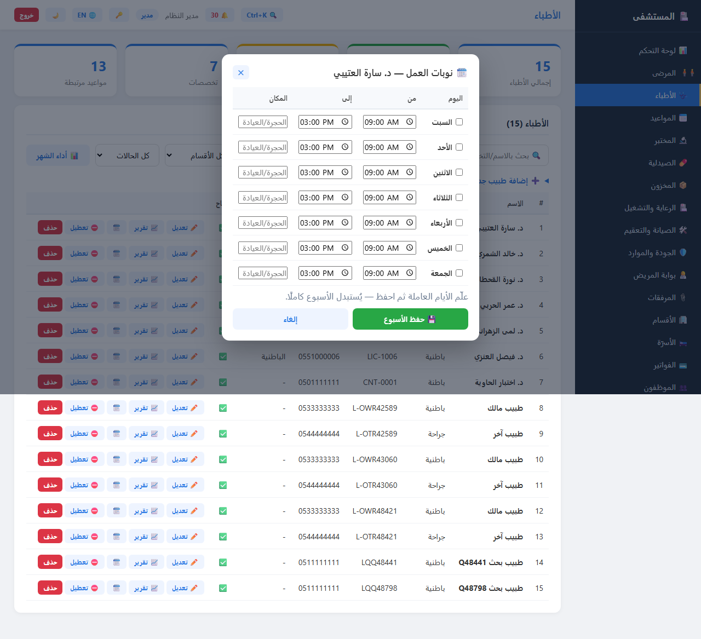
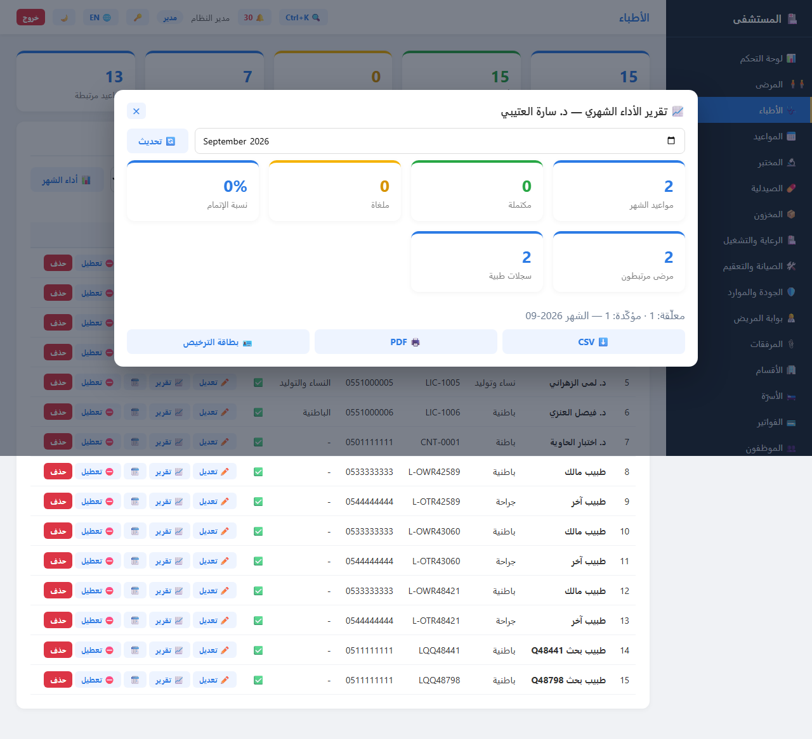

الوضع الداكن يُفعّل تلقائيًا عند تفضيل النظام prefers-color-scheme: dark.
GET /doctors/performance/report.pdf — تقرير أداء جميع الأطباء مرتبّين حسب نسبة الإتمام.
كل يوم عمل يحتوي نوبتين (صباحية + مسائية) مع فحص التداخل التلقائي.
فحص أن الموعد ضمن نوبات الطبيب — رفض برسالة عربية.
GET /{id}/license.pdf — مستند إلكتروني للطباعة.
مصفوفة Python 3.12/3.13 + أرشفة artifacts.
pytest ✅ | stack 86/0 | PWA 26/0 | حمل p95 ≤110ms ✅ | Docker ✅
ستة اختبارات متصفح آلية على http://127.0.0.1:8001: تسجيل الدخول 📝 · التقرير المقارن PDF 📄 · تصدير CSV ⬇️ · بطاقة الترخيص 🪪 · جدول النوبات 🗓️ (يُحفظ دون تغيير البيانات) · الوضع الداكن 🌙.




/doctors/performance/report.pdf لم يكن مسجّلًا في الخادم الحيّ (404) → أُعيد تشغيل الخادم فرجع 200 بمستند %PDF.pytest 198/0 ✅ | E2E 10/10 🎭 | stack 83/0 | PWA 26/0 | حمل 200/200 — p95 = 93ms ✅ | Docker ✅